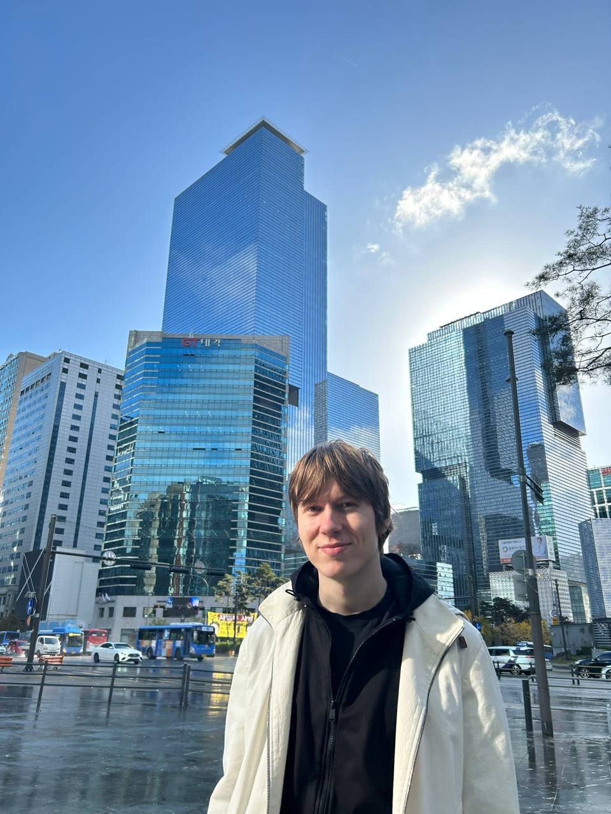
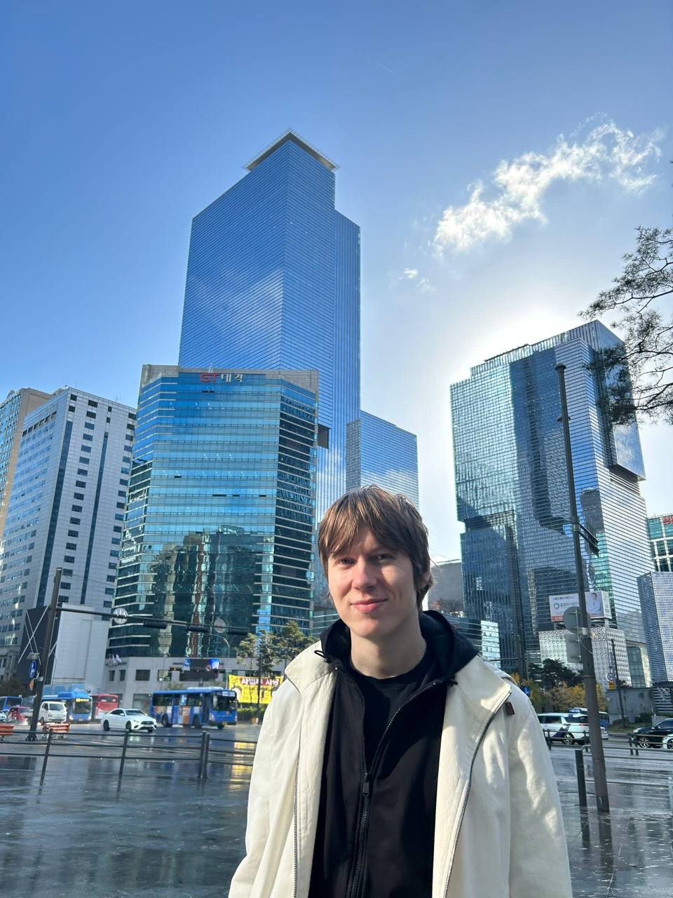

ARVI JUSSILA
Information Networks @ Aalto University
Avid tennis player, student and an interdisciplinary enthusiast.
Currently doing my bachelor's degree for the Aalto School of
Science.
“Modern man has transformed himself into a commodity; he
experiences his life energy as an investment with which he should
make the highest profit, considering his position and the
situation on the personality market. He is alienated from himself,
from his fellow men and from nature. His main aim is profitable
exchange of his skills, knowledge, and of himself, his
"personality package" with others who are equally intent on a fair
and profitable exchange. Life has no goal except the one to move,
no principle except the one of fair exchange, no satisfaction
except the one to consume."
I spend most of my free time bouldering; we might even share a
hobby or two, reach out!
 
